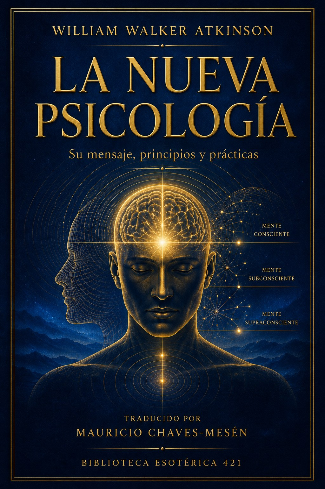
La nueva psicología
Esta guía acompaña una de las entradas más claras de Atkinson al territorio de la mente moderna.
Biblioteca Esotérica
Una biblioteca ordenada de las obras de Atkinson bajo su propio nombre y bajo los seudónimos Yogi Ramacharaka, Theron Q. Dumont, Swami Panchadasi, Three Iniciados, Magus Incognito y Edward Beals.
Selección de obras centradas en mente, pensamiento y conciencia, reunidas para leer a Atkinson y sus seudónimos como una biblioteca coherente.

Esta guía acompaña una de las entradas más claras de Atkinson al territorio de la mente moderna.
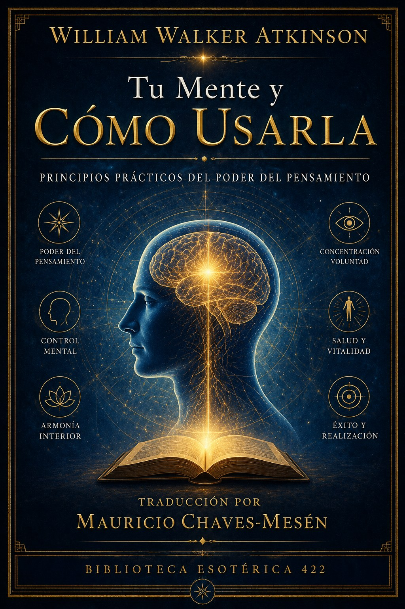
Este libro es un manual de uso. Atkinson no pregunta qué es la mente en abstracto, sino cómo se emplea, cómo se desperdicia y cómo puede educarse para servir a una vida más lúcida.
Este texto lleva al lector a explorar regiones de la mente que no suelen estar en primer plano: el subconsciente y el supraconsciente.
Este libro nos invita a explorar la interacción constante entre la mente y el cuerpo. Atkinson desmonta la vieja idea de que lo mental y lo físico son mundos separados.
La energía mental no es un remedio milagroso, sino una fuerza natural que puede despertar y dirigir procesos internos de recuperación.
La propuesta de Atkinson en este libro no es teoría abstracta, sino una invitación al autoentrenamiento.
Esta guía acompaña un texto donde Atkinson despliega, con rigor y metáfora, el mapa de la consciencia interna: ese territorio más allá del pensamiento cotidiano, donde operan fuerzas intuitivas, automáticas y profundas.
Este libro de William Walker Atkinson propone una psicología concreta: no la mente en abstracto, sino el arte de percibir la naturaleza humana tal como se manifiesta en gestos, posturas, tono de voz y hábitos.
Esta guía acompaña una de las obras más pragmáticas y directas de William Walker Atkinson sobre el magnetismo personal.
Este libro, considerado uno de los experimentos más audaces de Atkinson, busca tender un puente entre las antiguas enseñanzas ocultas y las teorías científicas modernas.
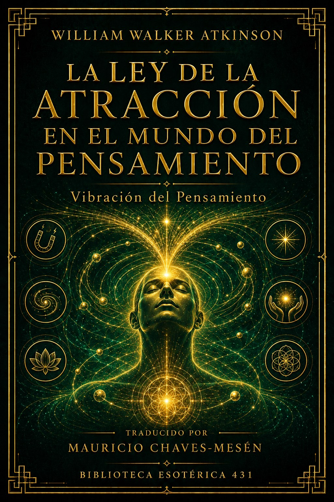
Este libro es uno de los textos centrales del llamado Nuevo Pensamiento, pero Atkinson abre dejando claro que su propósito no es formar discípulos pasivos, sino lectores capaces de practicar y verificar lo que estudian por sí mismos.
Este libro de William Walker Atkinson ofrece una visión amplia y sugerente: la existencia de un principio mental dinámico que atraviesa toda la naturaleza y que puede, si se comprende, ponerse al servicio de la vida consciente.
Esta guía está diseñada para acompañar tu lectura de 'Fascinación mental', un manual donde Atkinson analiza cómo la mente puede influir intensamente sobre otra mediante lo que él denomina fascinación o magnetismo personal.
Esta guía acompaña uno de los textos clave de Atkinson sobre la influencia mental entendida como vibración, comunicación y acción ética en la vida diaria.
Esta guía acompaña uno de los textos más francos de Atkinson, dedicado a desmitificar las ideas convencionales sobre el éxito.
Esta guía acompaña uno de los textos más pragmáticos y reflexivos de Atkinson sobre el éxito y la prosperidad.
Esta guía acompaña uno de los textos clásicos de William Walker Atkinson sobre el arte y la ciencia de vender.
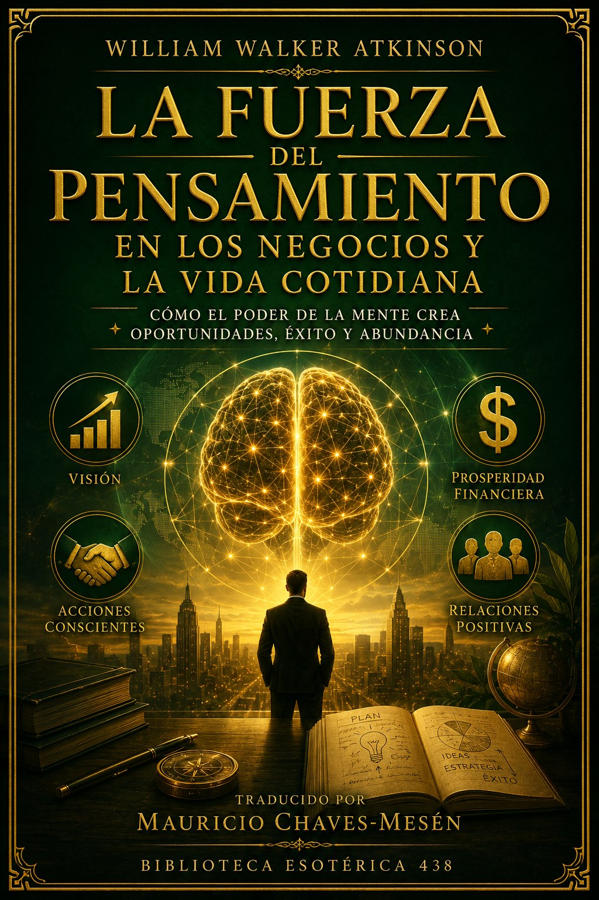
Este libro inaugura la obra de Atkinson con una propuesta radicalmente práctica: el magnetismo personal y la influencia psíquica son herramientas reales, no misterios inalcanzables.
Esta guía acompaña un texto crucial de Atkinson en el ámbito del éxito y la formación práctica de la mente.
Esta guía acompaña uno de los libros más reflexivos de Atkinson, centrado en la gran pregunta filosófica: ¿qué es la Realidad?
La lógica, para Atkinson, no es disciplina académica reservada a especialistas, sino arte vital que permite pensar con más claridad y vivir con mayor acierto.
El arte de la expresión, según Atkinson, no es un adorno intelectual ni un privilegio de oradores profesionales, sino una herramienta necesaria para toda persona que quiera traducir sus ideas y sentimientos en acciones, acuerdos y relaciones.
Esta guía acompaña un texto fundamental para quien busca cultivar una memoria despierta, flexible y fiel a la experiencia.
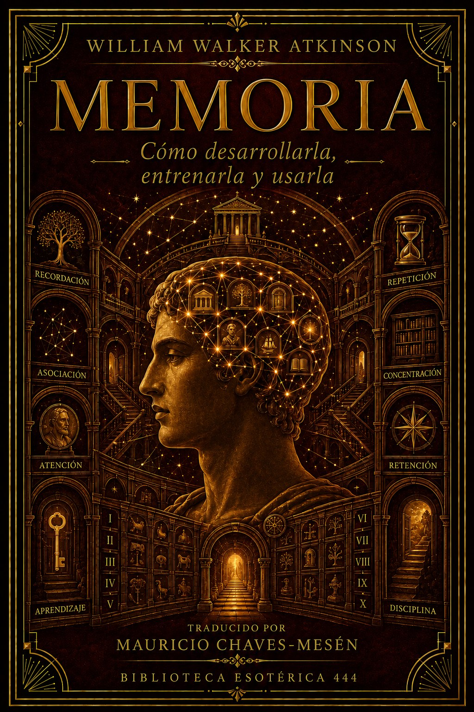
Esta guía acompaña el texto clásico de Atkinson sobre una de las facultades más decisivas de la mente: la memoria.
Esta guía acompaña uno de los textos más vitales de Atkinson, donde el "Nuevo Pensamiento" no es solo una colección de ideas optimistas, sino una herramienta para descubrir y refinar la fuerza interior.
Esta guía acompaña la exploración de Atkinson sobre el "crisol" donde las corrientes filosóficas y espirituales modernas son fundidas, reexaminadas y reformuladas.
Fragmentos del Nuevo Pensamiento es una colección de ideas que Atkinson recopila para aterrizar el 'Nuevo Pensamiento' como una filosofía práctica y flexible.
Esta guía acompaña una de las aproximaciones más articuladas de Atkinson al Nuevo Pensamiento, explorando sus raíces filosóficas y las prácticas que propone para el desarrollo espiritual y mental.
Este libro de William Walker Atkinson explora dos ideas centrales del pensamiento esotérico: que el alma atraviesa múltiples existencias y que cada vida está tejida por las consecuencias —karma— de nuestras acciones pasadas.
Este libro introduce al lector en la tradición de la psicomancia: el arte de percibir información sutil, oculta o distante mediante los llamados "sentidos astrales" y herramientas como la bola de cristal.
Este texto de Atkinson, pionero en la exploración psíquica, intenta situar la telepatía entre el misterio y la investigación seria.
Este libro, escrito bajo el seudónimo de Edward Walker, afirma una idea perturbadora y poderosa: no hay pensamientos inocuos.
Este libro tan singular de Atkinson, escrito bajo pseudónimo, entrelaza relato personal, parábola y manual de búsqueda.
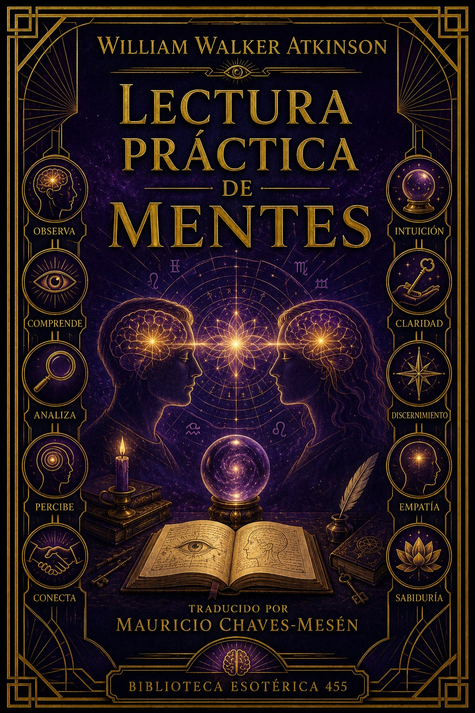
Esta guía acompaña el recorrido de Atkinson por la telepatía y la transferencia de pensamiento desde una perspectiva práctica y reflexiva.
Selección de obras centradas en aura, clarividencia y mediumnidad, reunidas para leer a Atkinson y sus seudónimos como una biblioteca coherente.
Esta guía acompaña uno de los textos más visuales y sugestivos de Atkinson bajo el nombre de Swami Panchadasi. El aura aparece como un lenguaje sutil: colores, vibraciones y formas que expresan estados físicos, emocionales y mentales.
Este libro surge de la tradición esotérica de la India, adaptada para mentes occidentales por William Walker Atkinson bajo el nombre de Swami Panchadasi.
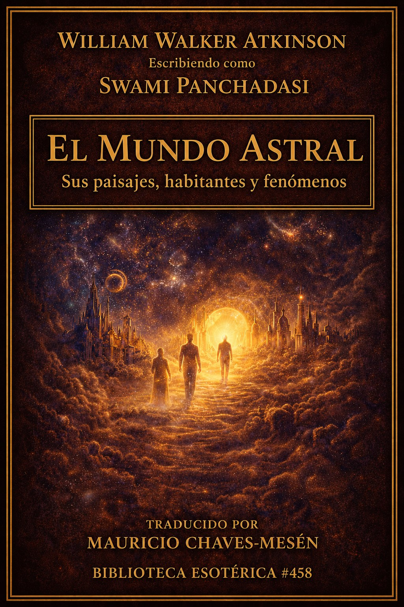
Esta guía propone al lector un itinerario para leer El mundo astral, no como una colección de relatos fantásticos, sino como una invitación a afinar la percepción, el discernimiento y la ética respecto a las dimensiones sutiles de la existencia.
Este libro, firmado por William Walker Atkinson bajo el nombre de Swami Bhakta Vishita, propone un encuentro directo con la clarividencia, no como fenómeno fantástico, sino como una facultad humana natural que puede desarrollarse con atención.
Este libro invita a repensar la mediumnidad como una capacidad humana natural, no como algo sobrenatural ni reservado a unos pocos elegidos.
Selección de obras centradas en filosofía yogui, reunidas para leer a Atkinson y sus seudónimos como una biblioteca coherente.

Esta guía acompaña un texto fundacional del Nuevo Pensamiento orientalista. Bajo el seudónimo de Yogi Ramacharaka, Atkinson organiza catorce lecciones que exploran la constitución humana, el desarrollo interior y los principios prácticos.
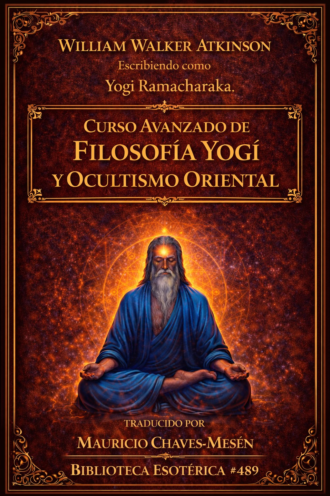
Este curso avanzado invita a una exploración más profunda y comprometida del sendero yogui, integrando enseñanzas de la filosofía oriental y el hermetismo moderno.
Este libro de William Walker Atkinson (bajo el nombre Yogi Ramacharaka) invita a desaprender hábitos inconscientes sobre la respiración y a reconstruirla como un arte consciente, fuente de salud, energía mental y apertura interior.
Este libro, escrito por Atkinson bajo el nombre de Yogi Ramacharaka, no promete verdades absolutas sobre lo invisible, sino una invitación honesta a contemplar el "otro lado" de la existencia.
Esta guía acompaña uno de los textos más prácticos y directos de Atkinson, bajo el seudónimo de Yogi Ramacharaka.
Este libro guía al lector a reconsiderar la relación cotidiana con el cuerpo, no como un instrumento secundario, sino como la base de toda disciplina superior.
Este libro, escrito por William Walker Atkinson bajo el nombre de Yogi Ramacharaka, introduce los principios fundamentales del Raja Yoga: el arte del desarrollo y control mental.
Esta guía acompaña uno de los textos más profundos de William Walker Atkinson, publicado bajo el nombre de Yogi Ramacharaka.
Esta guía acompaña el pequeño pero preciso tratado de William Walker Atkinson, escrito como Yogi Ramacharaka, sobre el papel esencial del agua en el sistema de autosanación y vitalidad que difunde la tradición del Hatha Yoga.
Este libro invita a explorar el cristianismo desde su vena esotérica y profunda, lejos de doctrinas externas y disputas de credos.
Este libro acerca al lector occidental a las raíces filosóficas y espirituales de la India.
Esta guía acompaña uno de los textos más meditativos del ciclo Yogi Ramacharaka. 'El espíritu de los Upanishads' no es una serie de dogmas, sino una invitación a la autoinvestigación y al contacto directo con el sentido profundo del Ser según.
Esta guía acompaña la versión y comentarios de Atkinson (bajo el nombre de Yogi Ramacharaka) sobre uno de los textos más reverenciados de la tradición hindú.
Selección de obras centradas en magnetismo personal, reunidas para leer a Atkinson y sus seudónimos como una biblioteca coherente.
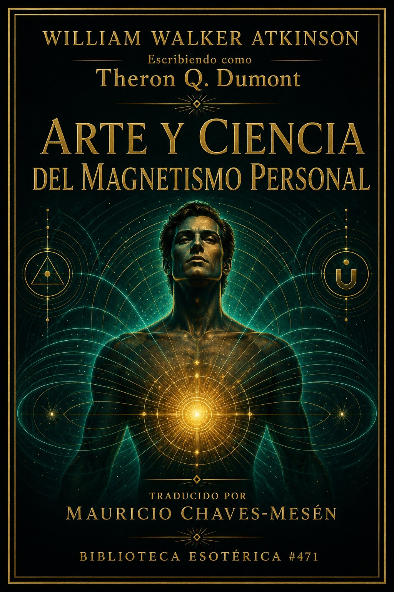
Esta guía acompaña una de las obras más buscadas de Atkinson bajo el pseudónimo de Theron Q. Dumont.
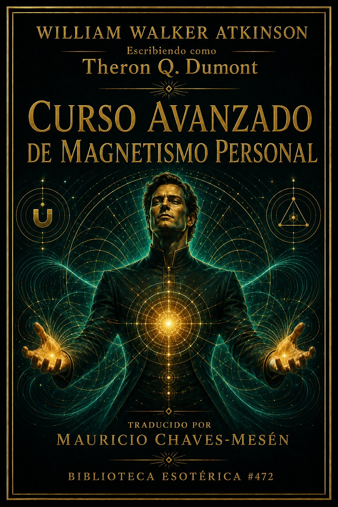
Este libro es el corazón práctico del sistema de magnetismo personal de Atkinson. Bajo el seudónimo Theron Q.
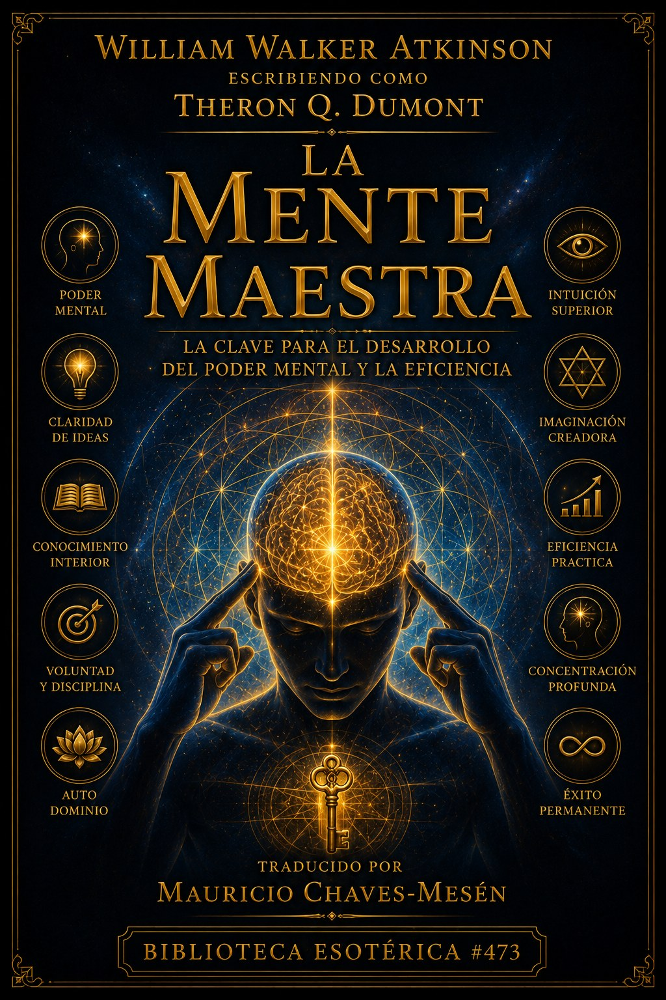
Este libro, bajo el sello de Theron Q. Dumont, invita a abandonar la especulación metafísica para adentrarse en el terreno de la psicología viva y aplicada.
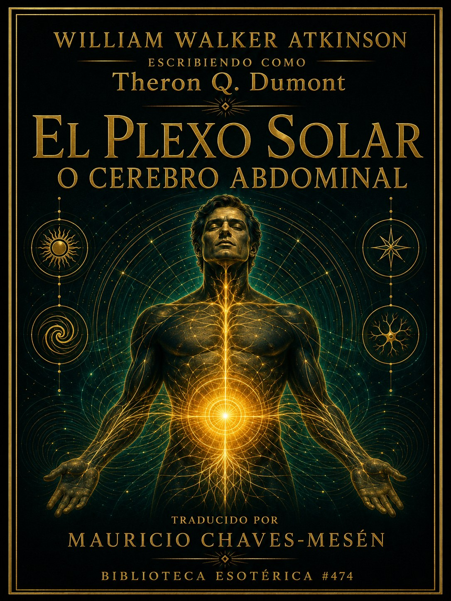
Este libro, bajo el seudónimo Theron Q. Dumont, descompone la fisiología y el misterio práctico del plexo solar: lo llama el centro de la vida vegetativa, el 'cerebro abdominal' y la casa de la energía vital.
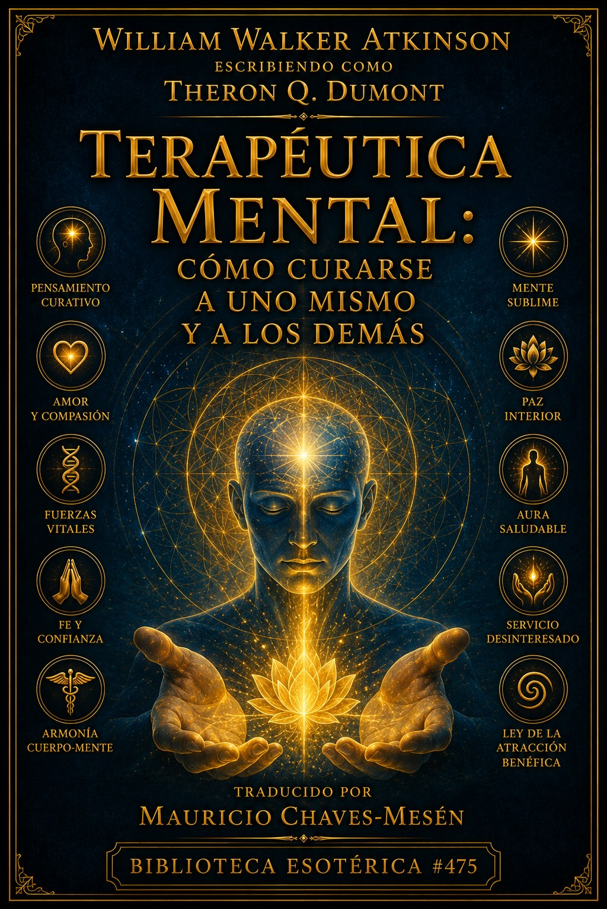
Esta guía acompaña una de las exposiciones más claras y prácticas de Atkinson sobre el poder mental aplicado a la salud.
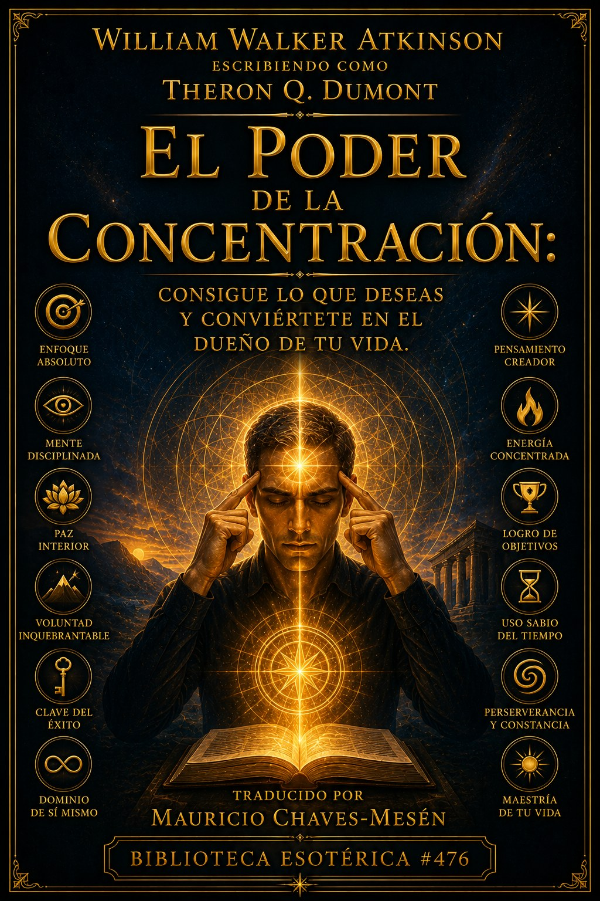
Esta guía acompaña un libro fundamental para quienes desean desarrollar la autodisciplina enfocada y la fuerza de voluntad. Atkinson, bajo el seudónimo de Theron Q.
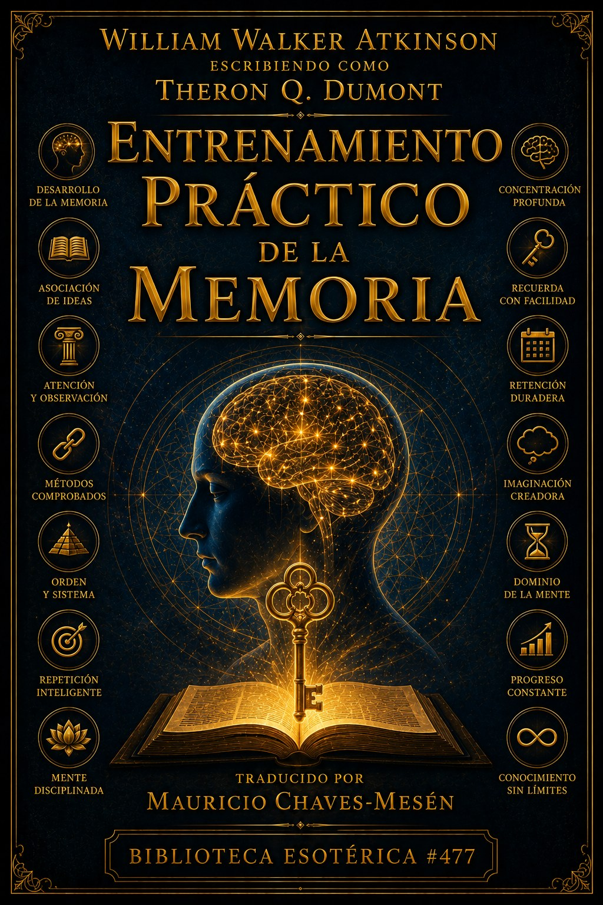
Esta guía te acompaña en la lectura de uno de los tratados más lúcidos sobre la memoria en la tradición del Nuevo Pensamiento. Atkinson, bajo el nombre de Theron Q.
Selección de obras centradas en kybalion, rosacruces y arcanos, reunidas para leer a Atkinson y sus seudónimos como una biblioteca coherente.
Este libro, atribuido a William Walker Atkinson bajo el nombre de 'Magus Incógnito', presenta la enseñanza esencial del rosacrucismo: una tradición que se mueve entre el hermetismo, el misticismo y la alquimia interior.
Este libro, bajo la pluma de Atkinson y atribuido a los 'Tres Iniciados', no ofrece una filosofía concluyente sino una invitación a examinar los fundamentos de la tradición arcana.
Las fórmulas arcanas, atribuidas a William Walker Atkinson bajo el seudónimo de los Tres Iniciados, son mucho más que una colección de principios ocultos o juegos mentales.
'Vril: magnetismo vital' es una invitación a observar la energía vital que subyace en todos los procesos de la vida, según las enseñanzas esotéricas recogidas por Atkinson.
Este libro, atribuido a Atkinson y los Tres Iniciados, invita a descubrir el principio de sexo o polaridad como una ley universal, más allá de la biología y la moral habitual.
El Kybalion ocupa un lugar singular dentro de la literatura esotérica: más que prometer poderes ocultos, su invitación es al estudio reflexivo y al entrenamiento constante.
Selección de obras centradas en poder personal y creativo, reunidas para leer a Atkinson y sus seudónimos como una biblioteca coherente.
Este libro invita a mirar hacia el centro de uno mismo: ahí donde Atkinson, bajo el nombre de Edward Beals, sostiene que habita tu Yo Maestro.
Esta guía acompaña una obra central de Atkinson sobre el poder de la imaginación como fuerza constructiva.
Esta guía acompaña un texto esencial del ciclo del 'Poder Personal', donde Atkinson presenta el deseo como el motor central de la energía humana.
Esta guía te acompaña en una exploración práctica del 'Poder de la fe', entendido por Atkinson no como algo místico ni dogmático, sino como una fuerza activa de la conciencia: la expectativa confiada.
El 'Poder de la voluntad' de Atkinson (bajo el seudónimo de Edward Beals) es una exploración seria y directa de esa fuerza central que atraviesa todas las grandes transformaciones personales: la voluntad.
Este libro —escrito por William Walker Atkinson bajo el seudónimo de Edward Beals— invita al lector a reconocer que la mayor parte de su vida mental transcurre fuera de la conciencia ordinaria.
Esta guía está diseñada para acompañar la lectura de 'Poder espiritual: la fuente infinita', donde Atkinson—bajo el seudónimo de Edward Beals—invita a indagar más allá de la superficie de la naturaleza hasta la raíz invisible del poder.
Esta guía te acompaña a través del planteamiento claro y directo de Atkinson sobre el poder radiante del pensamiento.
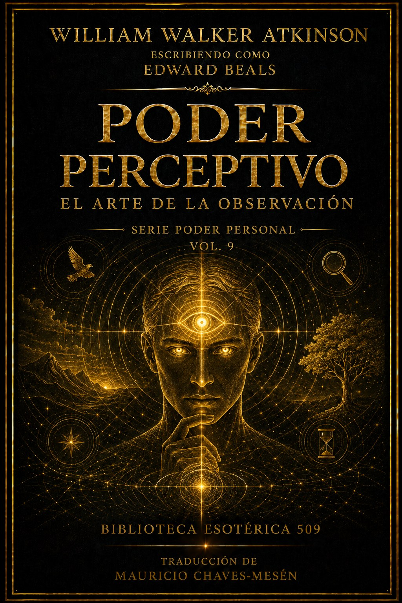
Este libro invita a observar la mente no como un reflejo pasivo, sino como un arquitecto que construye, limita y expande tu propio mundo de experiencia.
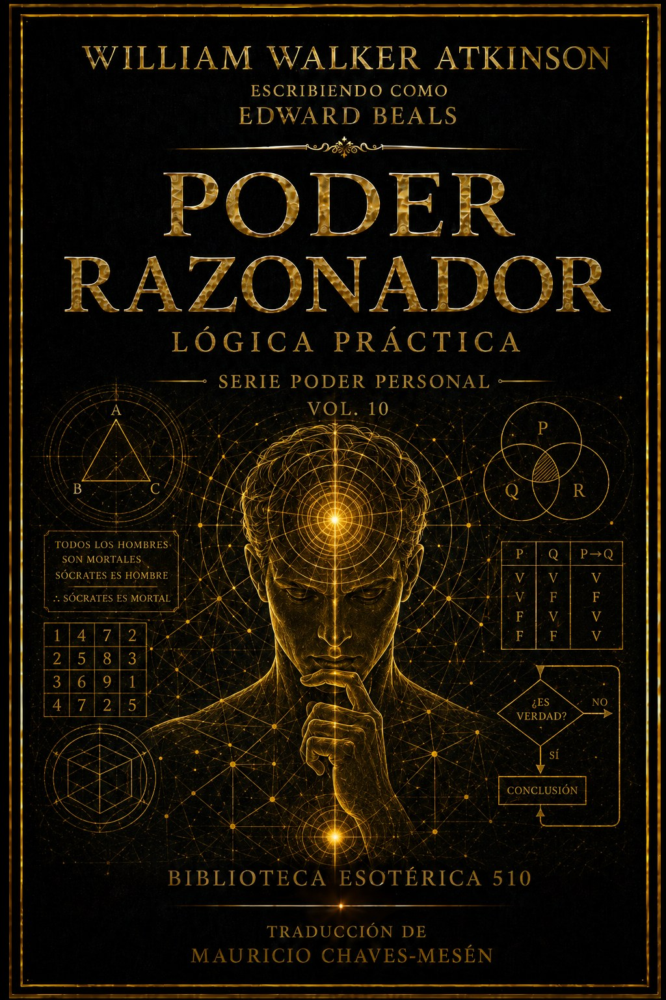
Este libro, presentado por Atkinson bajo el nombre de Edward Beals, muestra la lógica no como una materia árida o puramente académica, sino como la clave para pensar mejor y actuar con más certeza.
Esta guía acompaña 'Poder del carácter', un libro fundamental dentro de la serie 'Personal Power' de Atkinson bajo el seudónimo Edward Beals.
Esta guía acompaña uno de los textos más peculiares de Atkinson, quien aquí, bajo el seudónimo de Edward Beals, explora la potencia regeneradora de la energía vital.